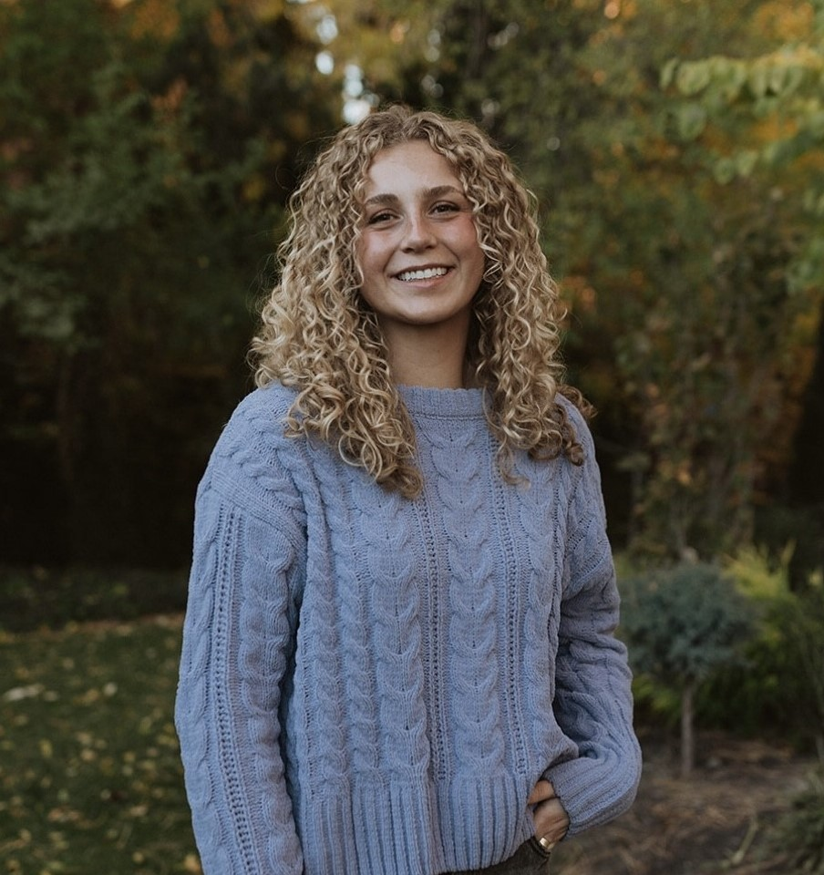

Designer and counseling graduate student with a background in behavioral support, speech-language pathology, education, and visual communication. I help people understand, connect, and engage — through strategy, design, and human-centered thinking.

I started in speech-language pathology — working directly with children and adults to improve how they communicate. That work taught me something most designers don't learn in school: that communication isn't just about what you show people. It's about how they process, feel, and respond.
That insight followed me into design. Over four years I've built full marketing campaigns, brand identities, property brochures, drone photography, educational materials, and UX research projects — for real clients with real stakes.
Now I'm completing a graduate counseling program while continuing to design — and looking for roles where both sides of my brain can work together. Instructional design, behavioral health communication, client success, and UX are where I see my background fitting best.
Build a complete brand identity and pre-leasing campaign from scratch for a new large-scale industrial park in Spanish Fork, Utah — during active construction, before any finished product existed to photograph.
Lease a large, newly constructed industrial facility in Provo, Utah to qualified tenants — requiring a complete brand identity built from scratch, a full digital + print campaign, drone photography, custom mapping, and an ongoing market report.
Working with a team, I conducted heuristic evaluations and usability tests on the USDA's government agency website, identified critical navigation and comprehension failures, then redesigned the desktop interface to reduce friction for farmers and agricultural researchers.
A camper van rental company's mobile experience had friction in the booking flow and unclear brand communication. I led a full UX process from user interviews and affinity mapping through low-fidelity prototypes and final high-fidelity design.
Children and adults with communication disorders need learning materials that are visually clear, behaviorally appropriate, and engaging. I designed session aids, communication boards, activity sheets, and visual schedules tailored to individual client needs.
D.A. Davidson needed a professional market study report for VERK — a proposed inland port with over 5 million square feet of planned industrial real estate. The report had to communicate complex market data, geographic analysis, and development projections clearly to financial and investment audiences.
Across multiple real estate and business clients, complex geographic, financial, and market data needed to be transformed into clear, visually compelling assets — maps, graphs, charts, and presentation graphics that communicate instantly to brokers, investors, and stakeholders.
I'm actively looking for remote roles in instructional design, behavioral health communication, client success, and UX — where psychology and design solve real problems together.